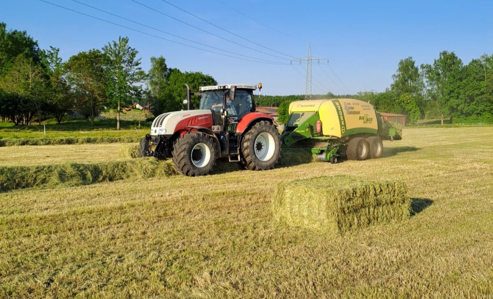
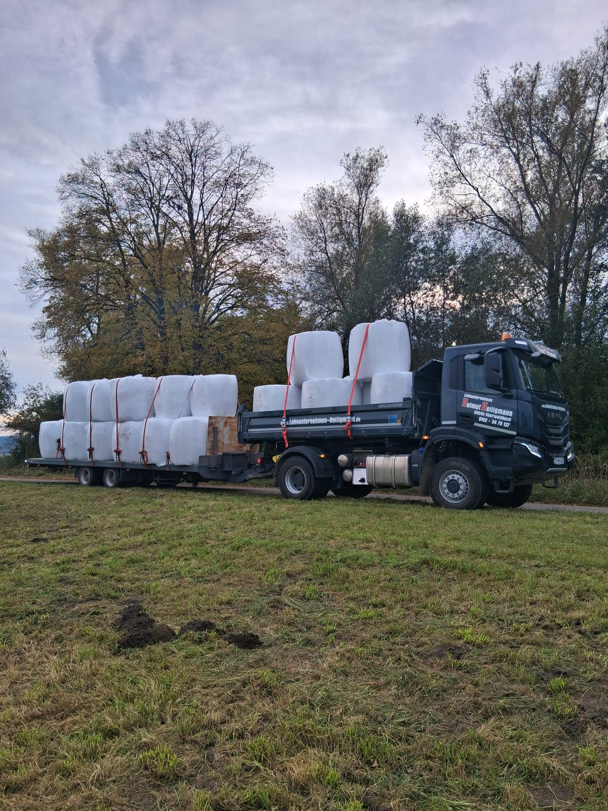
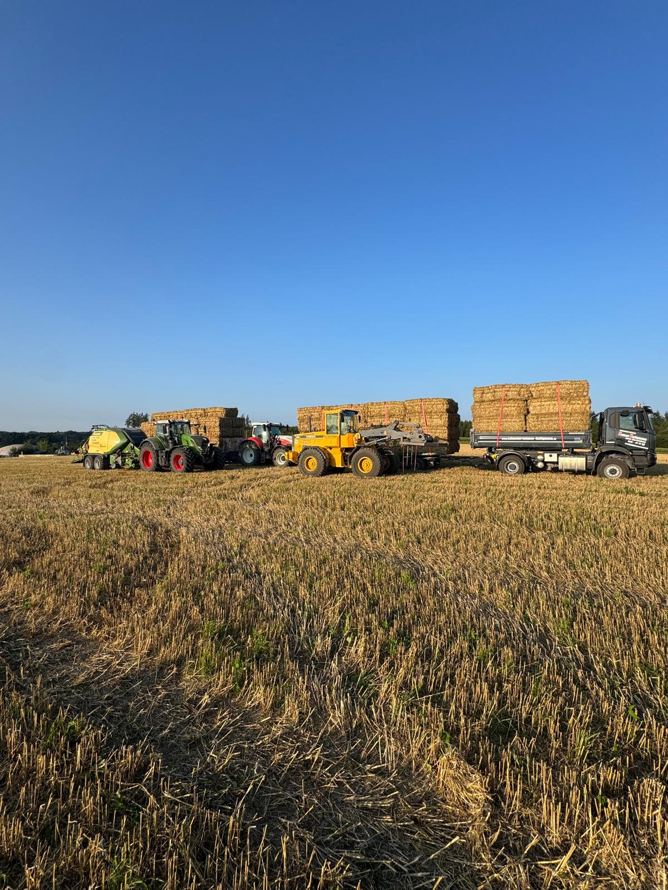

Ballenpressen
Pressen von Stroh, Heu und Silage, zuverlässig und in guter Qualität.
Landwirtschaftliche Arbeiten gehören schon lange zu unserem Geschäft und bereiten uns stets große Freude. Wir bieten verschiedenste Leistungen wie Ballenpressen, Silage-Transport und vieles mehr an, dafür haben wir die passenden Landmaschinen.
Außerdem bewirtschaften wir eigene Felder und betreiben Stroh- und Heuhandel.
Von der Feldarbeit bis zum fertigen Ballen, mit Freude und Leidenschaft.

Pressen von Stroh, Heu und Silage, zuverlässig und in guter Qualität.

Transport von Silage und Erntegut mit unseren Landmaschinen.

Wir bewirtschaften eigene Felder und übernehmen verschiedenste Feldarbeiten.

Freihalden · Jettingen-Scheppach · Landkreis Günzburg
Von unseren eigenen Feldern, in 100 % Bio-Qualität. Abholen bei uns am Hof.
Melden Sie sich, wir finden gemeinsam die passende Lösung.
Jetzt anfragen